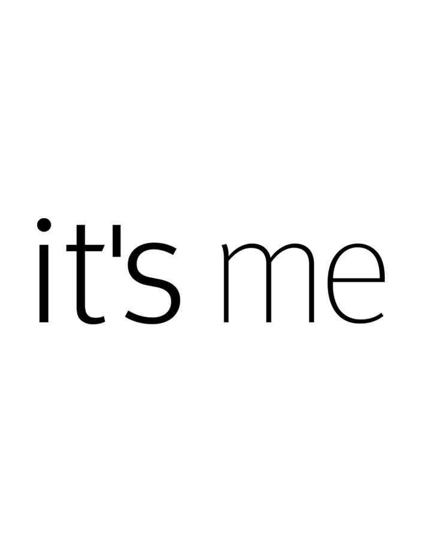

ЛИЧНАЯ ИНФОРМАЦИЯ
ИМЯ
- Федунова АринаВОЗРАСТ
- 18 летМЕСТО УЧЕБЫ
- НИУ ВШЭ,факультет филологии| НАУЧНЫЕ ИНТЕРЕСЫ | ЕЩЕ НЕМНОГО ОБО МНЕ | |
|---|---|---|
|  |
Не смотря на то, что жизнь меня закинула на филфак моей страстью можно назвать - химию. В школе я была настоящим снобом, когда дело касалось химии. Но продолжилось это недолго, всего два года. Однако среди томиков Пушкина, Маяковского и Хаксли у меня до сих пор стоят учебные пособия по химии для 9 класса, для 1 курса университета. Еще я очень люблю зарубежную литературу. Особенно книги скандинавских писателей (отдельную часть моего сердца занимают книи про Муми-троллей)Русскую я читаю для поддержания меланхолического настроения. |
Почти 9 лет занималась художественной гимнастикой, хотя просила маму отвести меня на фигурное катание. Так и не дождавшись, ходила сама в соседний ледовый дворец. В 11 классе решила сама сшить платье и случайно получила 2ой разряд по шитью. Платье сшила, обрадовала всех, вспоминаю его и радуюсь, какая я молодец. Обожаю Олдоса Хаксли, Рэя Бредбери и Чехова (его рассказы были первыми осознанными произведениями, которые я прочитала, за исключением Пушкина "Руслан и Людмила") |